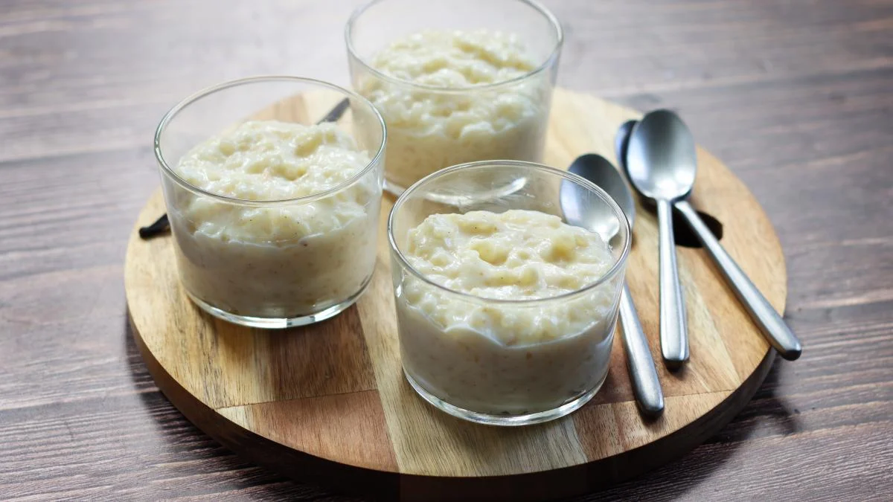

Rice Pudding

Ingredients:
- orange or clementine
- 5 tablespoons of sugar
- 1L of milk
- 200 g of round white rice
- 1 sachet of vanilla sugar or vanilla aroma
Instructions:
- Boil the milk with the sugar, the vanilla sugar and the zest of your choice.
- When the milk boils, throw in the rice and lower the heat so that it boils very slowly; the rice should cook very slowly.
- When the rice comes close to the milk level, turn off the heat and let cool; the rice will finish soaking up the milk as it cools.
- This dessert can be served warm or cold, depending on your taste.